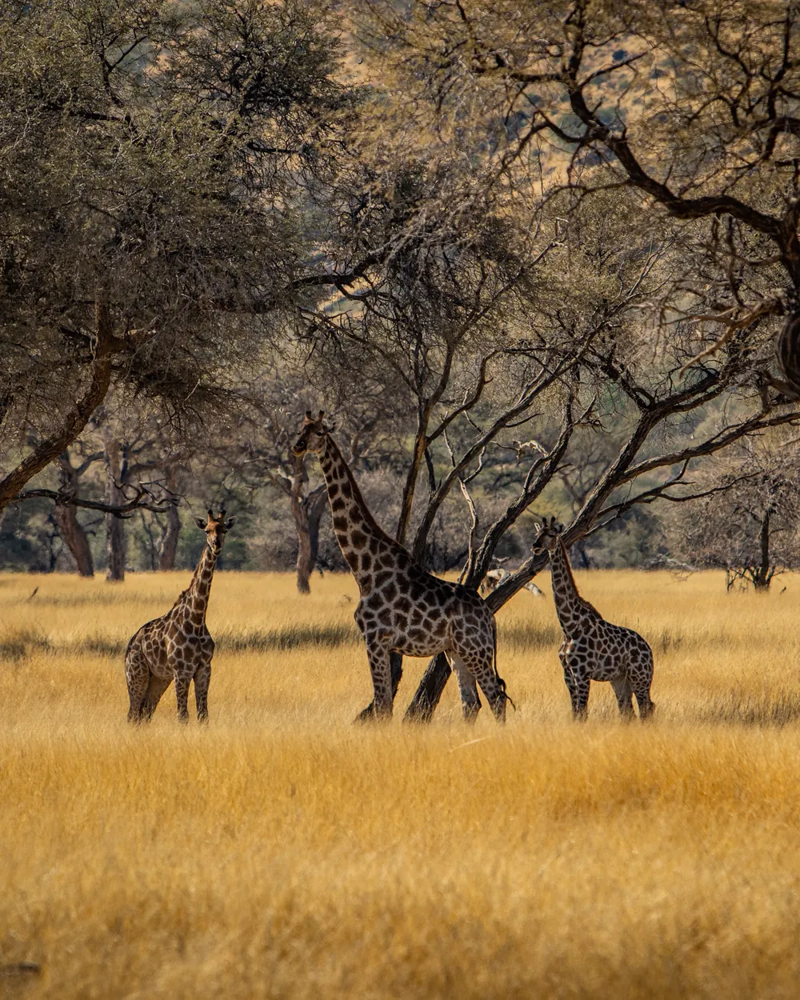

That's what tot wa means in Afrikaans, and it's the first thing we ask every guest, whether they're ten minutes from arrivals pickup or ten days into a loop through the desert.

Tot Wa started with transfers: in and out of Hosea Kutako and Eros, city to lodge, and across the border into Botswana, South Africa and Zambia.
That groundwork, knowing every road, every route timing, every border post, turned out to be exactly what the rest of the business needed.
Guests kept asking us to take them further: into Etosha for the game drives, out to Twyfelfontein for the rock art, north to a Himba Living Museum. So we started planning full safaris too.
Six fixed routes now, plus anything custom, all driven by people who move through Namibia every day, not a booking platform with no wheels on the ground.

Transfers and tours run by the same company, start to finish. No handoff between a shuttle desk and a separate tour operator.
Namibian drivers and guides who know the roads, the borders and the parks because they drive them constantly, not occasionally.
Fixed routes are a starting point, not a limit. Tell us your dates and pace and we'll adjust the itinerary to fit.